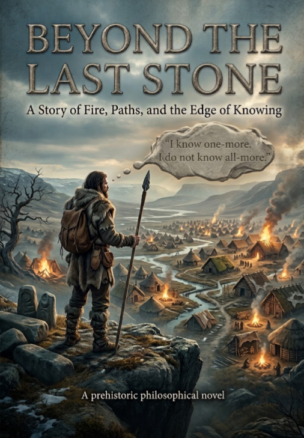

Science Fiction Literature · Axiologic Research Editions
Beyond the Last Stone
A Story of Fire, Paths, and the Edge of Knowing
A young hunter learns that one-more is not all-more, and a people must decide what to do with a truth that has no old name.
The herd did not come
When the herd disappears, the people at the cave must decide whether to follow the old story or the evidence before them. Ar is young enough to ask the question no one wants: if no one has seen every deer, how can anyone know the Great Herd has no end?
Beyond the Last Stone begins with hunger, flint and a disputed path, then follows a small human community across thresholds of memory, agriculture, obligation and city life. Its language is deliberately simple, but its subject is not: how people learn to distinguish what they know from what they only need to believe.
One more is not all more
What makes a new idea dangerous? Not only that it may be wrong, but that it can expose the limits of a story that has kept a people together.
How does knowledge change a society? Each new tool, rule and account of the world opens a path while also creating fresh ways to command, exclude and forget.
Can a community outgrow its gods? The novel treats belief as an inheritance that can protect life, constrain it or be remade when the old answer no longer reaches far enough.
I know one-more. I do not know all-more.
A small world at the edge of thought
This is philosophical fiction for readers who enjoy the beginning of a question: before systems become institutions, before certainty becomes doctrine, and before a path becomes the only path anyone remembers. It offers a human-scale journey through the origins of curiosity, power and correction.